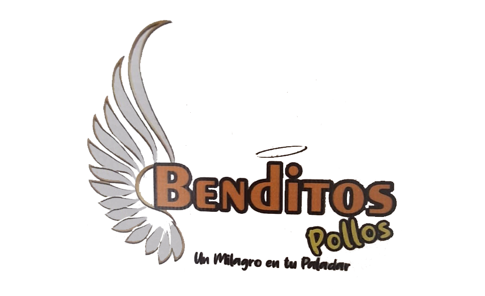

Bienvenidos a Benditos Pollos, donde disfrutarás de la bendición de comer nuestros deliciosos productos.

Sobre nosotros
Somos una microempresa que se basa en BPM (Business Process Management) o gestión de procesos de negocio, con esto logramos no solo un aumento en productividad y reducción de costos, sino una mejora continúa en el proceso, sin dejar atrás el medio ambiente.
Tenemos una variedad de productos para todos los paladares, hasta para los vegetarianos.
Nos caracterizamos por nuestra impecable atención al cliente y por nuestro servicio y sabores de la mas alta calidad.
Estamos comprometidos con el cuidado del medio ambiente, separando los productos aprovechables de los que no.